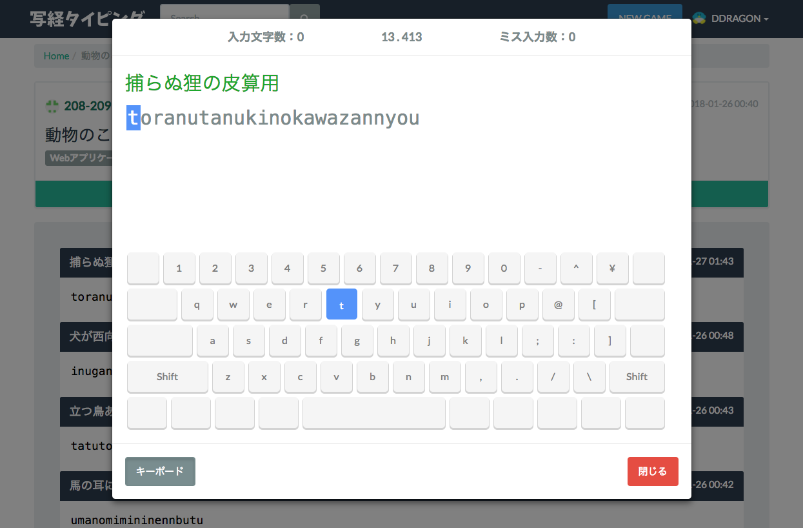

評価コメントは個別に送らさせていただきます。
写経タイピング
タイピングが苦手なので、タイピングゲームの作成と公開ができるアプリケーションにしました。 動物を題材としたタイピングゲームを遊ぶことができ、結果を動物の足の速さで評価してくれます。 入門コースで教わったことを少しづつ改変して作りました。 Windowsでしか動作確認ができていないので、Macで正常に動くのかわかりません(特に改行コード周り)。 詳しくは https://github.com/208-209/shakyo-typing にまとめてあります。 よろしくお願いします。
コーディング技術 35点、アイデア 20点、完成度 25点、総合 80点
zlooong(ズローーング)
動物たち(zoo)とながーーーく習慣化しよう！近未来！？5：5画面セパレートウェブデザイン採用（勝手に命名）！「zlooong」とにかく、サボリ癖、長続きしない自分を改善する為に作りました。新しいとかわいいをテーマに人生２回目のwebページ（アプリ）が出来ました。 蛇足：【Node.jsを会得し、完全版を作りたいと考えています。恥ずかしいですがド素人なので応募するかを最後まで悩みました。唯一、プログラミングだけは熱中でき、目標も持てました。この機会を与えてくれたN予備校のサービス運営様を心から感謝申し上げ、応募させていただきます。】 【追記】 素材は、自作キャラクター、いらすとや、商用フリーを使用。カードのスリーブは自分で作っています。
コーディング技術 25点、アイデア 15点、完成度 15点、総合 55点
短く.ga
短縮URLサービスです。1時間で作りました。言語はPython、フレームワークはTornadoを使用しています。
コーディング技術 20点、アイデア 5点、完成度 10点、総合 35点
神戸市気象・災害チェッカー(スクレイピング・ボット)
神戸市の警報及び注意報、台風情報を定期的にチェックし呟きます。
コーディング技術 20点、アイデア 5点、完成度 15点、総合 40点
OPEN DATA ONSEN♨︎
温泉が好きなので、温泉に関するアプリを作った結果がこちらです。オープンデータなにそれ？状態からはじまって、急いで作った温泉地図アプリです。Top画面は湯の花イメージしてます。セキュリティ回りが不安ですが、見てください。MapboxというAPIを使ってます。2017年1月からはじめたので、少し背伸びして１年以上で応募です大目に見てください。
コーディング技術 25点、アイデア 20点、完成度 15点、総合 60点
川崎フロ巡り
地元の役所のオープンデータを利用した公衆浴場マップです。Bootstrapとgoogleマイマップを使用しました。地元ネタで何か作ろうと思いましたが、役所のオープンデータだと面白いアイデアが浮かびませんでした。Bootstrapによるレスポンシブデザインと作成時間の短さ（1日程度）がポイントです。川崎フロンターレ意識してます。
コーディング技術 15点、アイデア 20点、完成度 15点、総合 50点
神奈川県の無線公衆LANアクセスポイント
すみません、完成できませんでした。当初はキャリア毎のアクセスポイントをgoogle map上に表示される予定でしたが、ReadMEに記載したことが内容が実装できませんでした。

コーディング技術 20点、アイデア 10点、完成度 5点、総合 35点
ininf
普段使用する"検索エンジン"と普段気にする"天気"を一つに組み合わせました．searchに入力するとGoogleで検索を行えます．位置情報を許可するとユーザーの位置の天気情報を画面全体を使って表現します．
コーディング技術 25点、アイデア 20点、完成度 20点、総合 65点